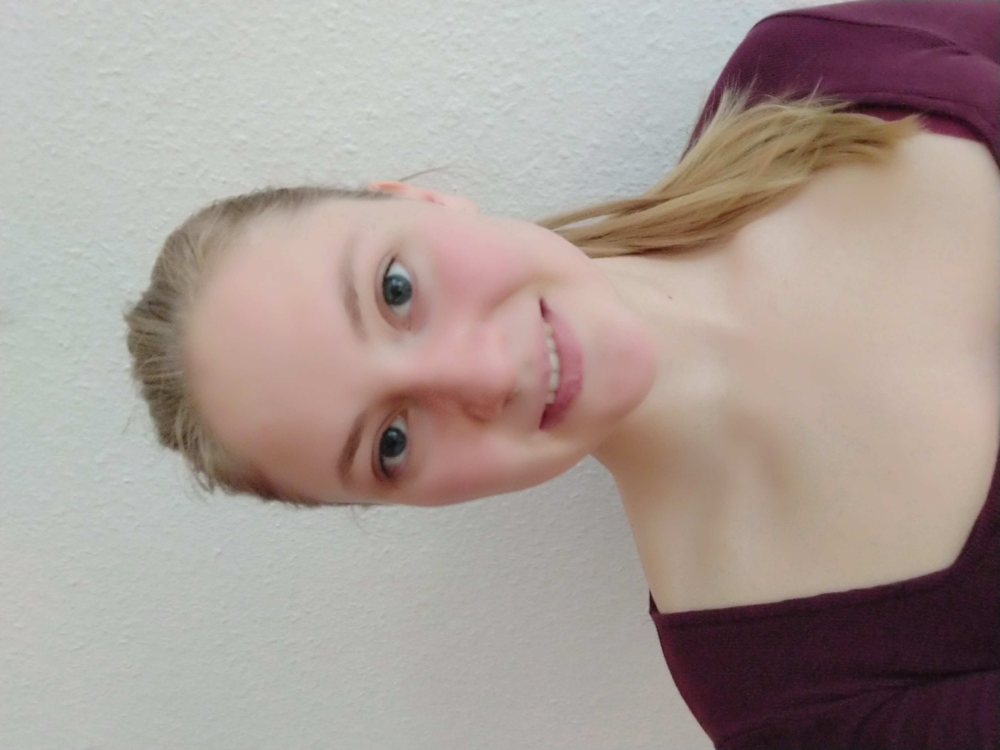

Vita
Diplom-Restauratorin Freya Krotz
Freiberufliche Restauratorin mit Schwerpunkt auf Bildwerken und Raumausstattung.
Tätigkeit in der Konservierung und Restaurierung von
Holzskulpturen,
Schmuckrahmen,
Gemälden auf Holztafel, Leinwand und Metall sowie
ausgewählten Musikinstrumenten.
Praktische Tätigkeiten unter anderem am GRASSI Museum Leipzig sowie am Ringve Musikmuseum Trondheim.
Vortragstätigkeit im Bereich historischer Farben sowie regelmäßige fachliche Weiterbildung.

Beruflicher Werdegang
| Seit 2025 | Freiberufliche Tätigkeit als Restauratorin, Mitglied im VDR (Verband der Restaurator:innen) |
| 2017 – 2025 |
Studium mit Diplom-Abschluss, Konservierung und Restaurierung von Kunst- und Kulturgut, Hochschule für Bildende Künste Dresden (HfBK), Fachklasse: Bildwerke und mobile Raumausstattung unter Prof. Dr. Andreas Schulze |
|
2025 Diplomarbeit Untersuchung, Konservierung und Restaurierung einer spätgotischen Pfeilerbekleidung mit einer unbekannten Heiligen aus dem Dom St. Marien Freiberg, betreut von Prof. Dr. Andreas Schulze und Dipl. Rest. Christine Kelm |
|
|
2021 Vordiplom „Weimarfarbe – ein Farbensystem aus der ersten Hälfte des 20. Jahrhunderts“ Relevante Archivalien und praktische Versuche zur Maltechnik, betreut von Prof. Ivo Mohrmann und Dipl. Rest. Anne Levin |
|
| 2015 |
Abitur, Kurfürst-Friedrich-Gymnasium Heidelberg, Leistungskurse: Kunst, Latein, Biologie |
Praktika
| 2021 |
GRASSI Musikinstrumentenmuseum der Universität Leipzig, Instrumentenrestaurierung , Dipl. Rest. Markus Brosig |
| 2019 | Akademische Sommerschule (HfBK): Untersuchung, Konservierung und Restaurierung einer barocken Kanzel aus St. Marien, Groß Mohrdorf |
| 2018 |
Ringve Musikmuseum, Trondheim (Norwegen), Instrumentenrestaurierung , Vera De Bruyn-Outboter |
| 2016 – 2017 |
Studienvorbereitendes Praktikum, Historisches Museum Regensburg, Restaurierung von Gemälden und Tafelbildern sowie Gestaltung von Ausstellungen und Betreuung von Leihverkehr bei Dipl. Rest. Annette Kurella, Einblicke in die Restaurierung von archäologischem Kulturgut , Teilnahme am Museologie-Seminar bei Dr. Wolfgang Neiser |
Fortbildungen & Vorträge
| 2025 | Teilnahme an der Tagung „Analysen für die Praxis – Untersuchungsmethoden für Holzobjekte in der Restaurierungswissenschaft“ |
| 2020 |
Referentin beim Kolloquium „Special Colours“: „Besonderheit und Anwendungszeit der Weimarfarben“ |